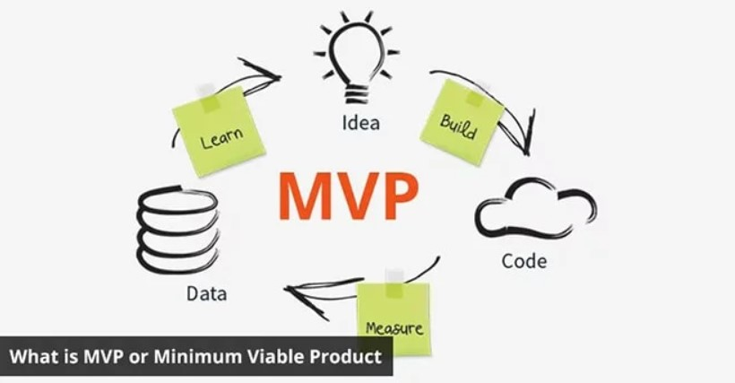
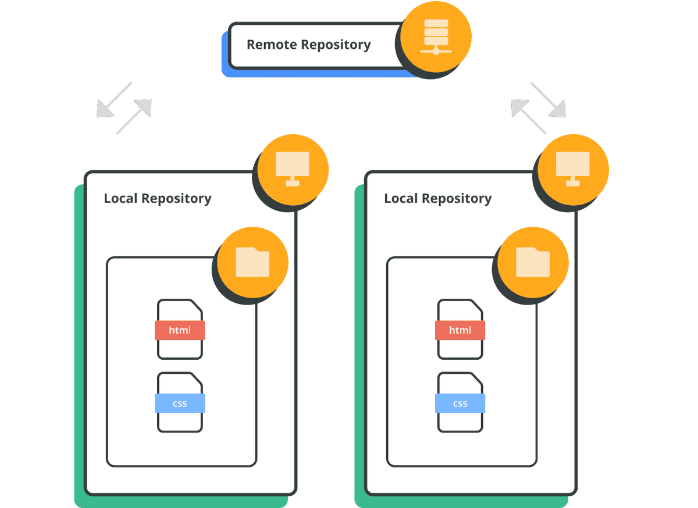

MVP mõiste
MVP (Minimum Viable Product) ehk minimaalselt elujõuline toode sisaldab ainult kõige olulisemaid funktsioone,
mis võimaldavad testida hüpoteesi ja saada kasutajatelt tagasisidet, kasutades minimaalselt ressursse.
Peamised punktid MVP kohta:

Miks on MVP vajalik:
- Kontrollida toote nõudlust varases etapis
- Minimeerida riske ja kulusid uue projekti käivitamisel
- Koguda kiiresti sihtrühma tagasisidet
MVP testimise iseärasused:
- Keskendumine põhilistele funktsioonidele, mis on kasutajatele kõige olulisemad
- Kitsaskohtade ja vigade tuvastamine varajases staadiumis
- Töö piiratud nõuete ja ressurssidega
Testija roll MVP arenduses:
- Põhifunktsioonidele keskenduvate testijuhiste väljatöötamine
- Kasutajate tagasiside kogumine ja analüüs
- Toote kohandamine saadud andmete põhjal
MVP lähenemise eelised:
- Aja ja ressursside kokkuhoid
- Võimalus parandada toodet reaalsete andmete põhjal
- Uute funktsioonide järkjärguline lisamine pärast hüpoteeside kinnitamist
Remote repository
Mis on Remote repo
Reposiit (ehk repo) on tsentraliseeritud kaust, mis on mõeldud koodi hoidmiseks. Kui teil on Git-reposiit failide ja kaustadega, saate hakata jälgima muudatusi ja versioone.

| Käsk |
Kirjeldus |
| git clone URL |
Kloonib remote hoidla sinu arvutisse |
| git pull |
Laeb remote hoidlast viimased muudatused alla |
| git push |
Saadab lokaalsed muudatused remote repole |
| git remote -v |
Kuvab lisatud remote hoidlad ja nende URL-id |
| git add . |
Lisab kõik failid praeguses kaustas ja alamkaustades Git-i indeksisse järgnevaks commit'iks |
| git commit -a -m "Sõnum" |
Lisab automaatselt kõik muudetud ja jälgitavad failid indeksisse ning salvestab muudatused |
| git branch nimi |
Loob uue nimega haru |
| git checkout nimi |
Lülitub olemasolevale nimega harule |
Esimene võimalus GitHubis remote repo loomine:
- Logi sisse oma GitHubi kontole
- Klõpsa üleval paremas nurgas asuval "+" ikoonil ja vali "New repository"
- Täida vajalikud väljad (Repository name/kirjeldus)
- Vajadusel vali lisaseaded (näiteks README
- Vajuta Create repository
Teine võimalus remote repo ühendamine lokaalse hoidla või uue projektiga:
- Ava terminal (gitCMD) ja mine oma projekti kausta:
cd /tee/sinu/projektikaust
- Initsialiseeri lokaalne Git repository: Kui projektil pole veel Git hoidlat:
git init
- Lisa failid Git-i jälgimisse:
git add .
- Tee esimene commit:
git commit -a -m "Esimene commit"
- Lisa remote repository link
git remote add origin https://github.com/kasutajanimi/my-project.git
- Pushi oma muudatused
git push kasutajanimi/my-project.git